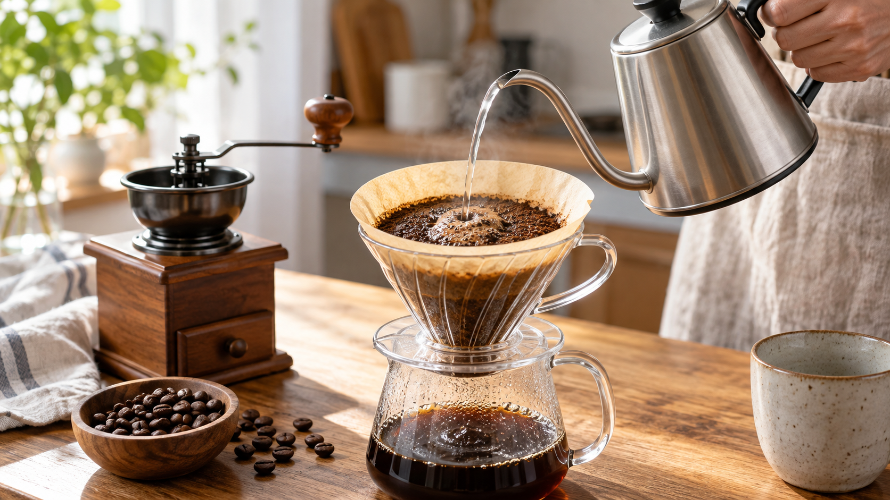

コーヒー豆は挽き目で味が変わる｜表面積と抽出速度
同じ豆を同じ量だけ使ったのに、今日は薄く、昨日は重たく感じる。そんなとき、豆をどれくらい細かく挽いたかを思い出してみてください。
結論は、挽き目は味を調整する一つのつまみになる、ということです。 細かく挽けば必ずおいしくなるわけではありません。湯に触れる面積と、湯が粉に触れる時間を一緒に考えると、次の一杯を調整しやすくなります。
粉の大きさで何が変わる？
豆を細かく砕くと、同じ重さでも湯に触れる面が増えます。角砂糖より粉砂糖のほうが水に触れる面が多いのと似ています。コーヒーでは、湯が成分を取り出すことを抽出と呼びます。
粉の細かさは、湯の通り方にも関わります。細かな粉が増えると流れが遅くなった例がありますが、これはエスプレッソで確かめられた結果です。家庭のペーパードリップでも同じ速さで変化するとは限りません。
研究で確認されたこと
カプセル式の抽出研究では、粒を細かくした条件で、豆から飲み物へ移る成分の割合が増えました。エスプレッソの研究では、ごく細かな粉が増えると湯の流れが遅くなり、抽出時間が延びました。一方、低温で抽出した研究では、粗めの挽き目と短めの時間を組み合わせた条件が、味の評価で高くなりました。
ここから分かるのは、挽き目が成分の出方や流れ方に関わっても、好ましい味は細かさだけでは決まらないということです。器具も湯温も時間も違う研究なので、一つの結果を家庭のドリップへそのまま移すことはできません。それでも、挽き目を調整項目として使う理由にはなります。
家庭では中挽きを出発点にする
次は研究で検証された配合ではなく、家庭で味の基準を作るための開始目安です。コーヒー粉15gを中挽きにし、ペーパーフィルターとドリッパー、85〜90℃ほどの湯230mlを用意します。
- 粉全体を湿らせるように湯を約35ml注ぎ、30秒ほど待ちます。
- 残りの湯を2〜3回に分けて静かに注ぎます。注ぎ始めから落ち切るまで、まずは2分半〜3分を目安にします。
- 飲んで重く感じたら次回は挽き目を一段階粗く、薄く感じたら一段階細かくします。湯量や豆の量はそのままにすると、調整の理由が分かりやすくなります。
ほかの飲み物にも広がる
茶葉から紅茶をいれるときも、葉の大きさと湯に触れる時間を一緒に考えられます。ただし、今回のコーヒー研究が紅茶の最適な時間を示したわけではありません。「細かいほどよい」と決めず、使う茶葉の案内を出発点に味を調整する、という考え方です。
まとめ
コーヒーの挽き目は、湯に触れる面と抽出の進み方を変えます。まず中挽きで一杯いれ、次回は挽き目を一段階だけ動かす。味が変わった理由をつかむ、小さな一歩です。